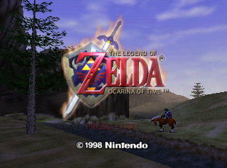

The Legend of Zelda: Ocarina of Time (Nintendo 64)
This article must comply with the non-Pokémon glitches guideline.
| The Legend of Zelda: Ocarina of Time | |
|  | |
| Wikipedia link | The Legend of Zelda: Ocarina of Time |
| Developer(s) | Nintendo Entertainment Analysis & Development |
| Publisher(s) | Nintendo |
| Platform(s) | Nintendo 64 |
| Release date(s) | November 21, 1998 (Japan) November 23, 1998 (North America) December 11, 1998 (Europe) December 18, 1998 (Australasia) |
Arbitrary code execution
On November 10, 2019; an arbitrary code execution method for the game was published on YouTube by Fig. According to the video author, it was "thought of and implemented by fasch and NatalyaHasDied". It appears to abuse a vulnerability in talking to Darunia, and may involve the T6 hardware register's pointer (see MIPS architecture).
| |
More research is needed for this article.
| |

|
Reason given: More information is deeply appreciated |
Infinite sword glitch
The infinite sword glitch is a glitch in The Legend of Zelda: Ocarina of Time, as well as Majora's Mask, games for the Nintendo 64.
The infinite sword is a glitch where the player's sword is stuck in the stabbing mode, this means that anything that hits it will take instant damage.
Procedure
- The player should find something that he or she can pick up or read (or a non-playable character that the player can talk to).
- Crouch with the R button.
- The player should line up so that the action icon says Grab/Check/Speak when using the sword the player should not hit anything solid.
- Stab with the B button.
- The player should press the B button but then tap A repeatedly.
The player can tell when this glitch is active because his or her sword will have white motion lines around it. If he or she puts away the sword by talking or picking it up, the player can get his or her sword out again by backflipping and pressing B in mid-air.
Uses
- This glitch can be used for the Bombchu hover glitch.
- If the player performed a powerful attack before this glitch when he or she performs a crouch stab that move will have the same power as for example a jump-slash.
Notes
- As soon as the player takes damage this glitch is deactivated if he or she swings your sword or crouches with the R button.
- When the player performs a crouch stab, that stab has the same power as the previous attack. For example if the player's previous attack was a jump-slash the crouch stab would have the same power as that jump slash attack. Infinite sword uses crouch stab, so using a powerful move before activating the crouch stab can result in a powerful attack.
| This article or section is a stub. You can help Glitch City Wiki wiki by expanding it. |